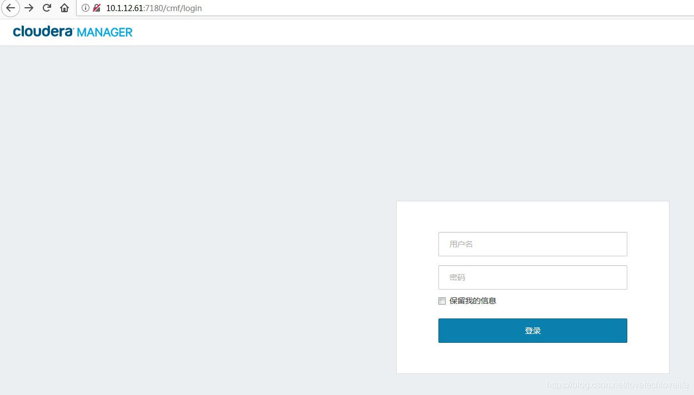
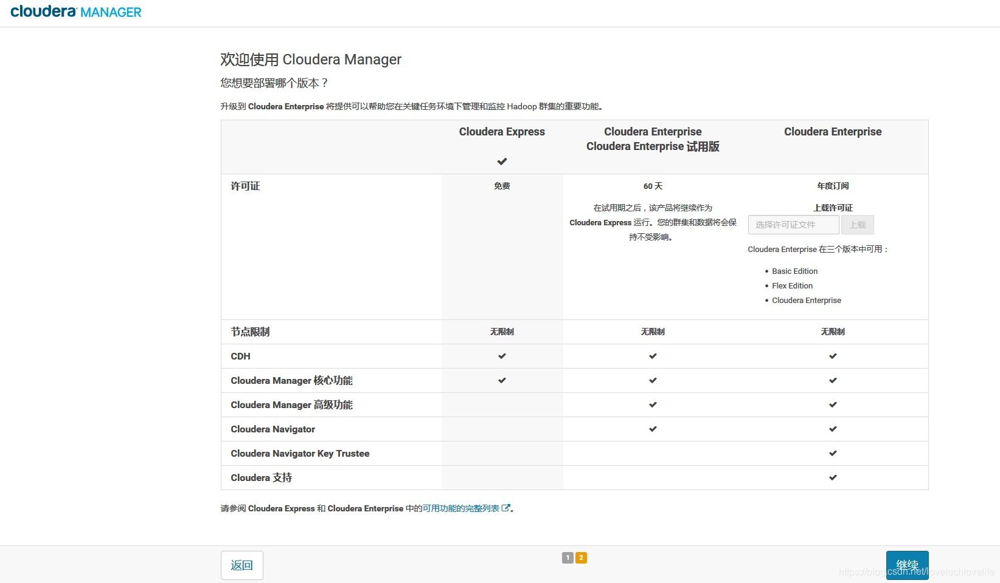
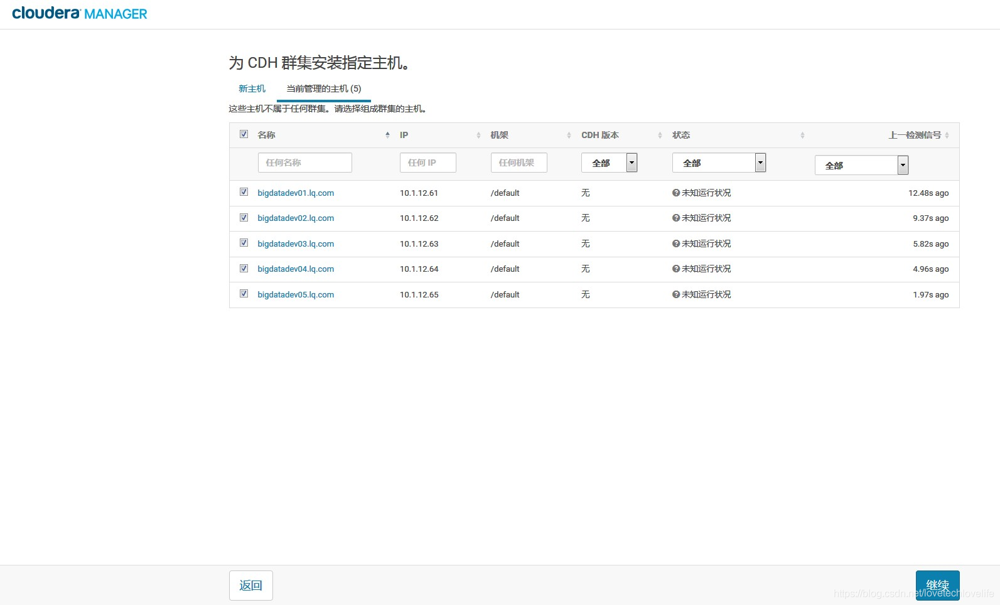
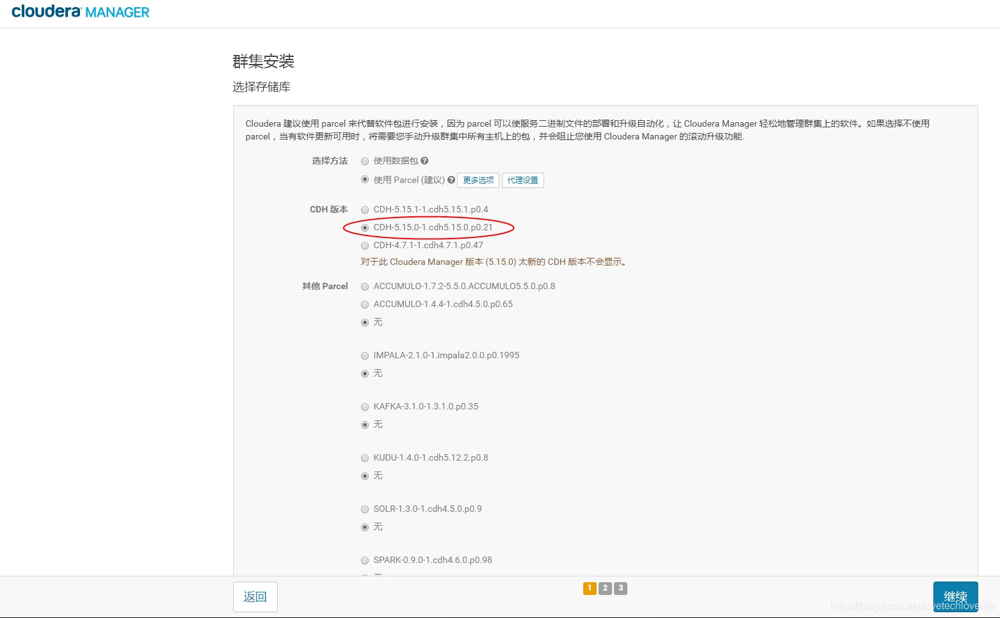
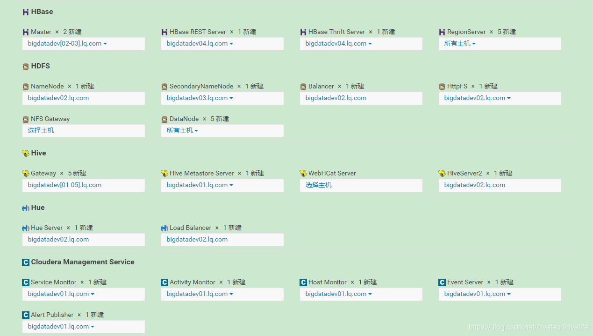
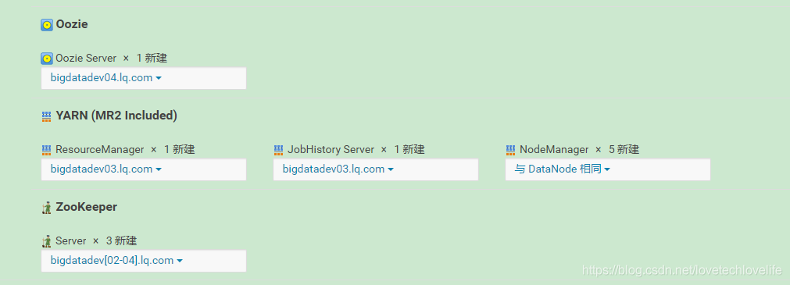

在云计算时代，可能很多公司为了成本的考虑，会采用第三方厂商提供的大数据集群，比如阿里的Maxcompute、华为的FusionInsight等。但选择安装开源的软件，能让你更加清楚其内部的原理，也能更好的针对自己公司的业务需求来定制软件进行二次开发。
下面针对自己在公司安装CDH集群的经历，整理了以下安装步骤，希望能对有需要的同学有所帮助！
注：以下步骤中，从第1步到第8步，除了元数据库的安装之外，其他步骤都是要在集群所有节点上执行的！
1. 配置主机名
在文件/etc/hosts的最后加入以下配置(集群所有节点都需要配置)
10.1.12.61bigdatadev01
10.1.12.62bigdatadev02
10.1.12.63bigdatadev03
10.1.12.64bigdatadev04
10.1.12.65bigdatadev05
依次修改每个节点文件/etc/hostname中的主机名为bigdata01，bigdata02…修改完之后需要重启主机reboot，才能生效。
2. 时间同步
使用chrony与外网进行时间同步，不需要配置从节点向主节点同步。
- 安装chrony服务：yum -y install chrony
- 启动服务：systemctl start chronyd
- 查看状态：systemctl status chronyd
- 设置开机启动：systemctl enable chronyd
3. ssh免密登录
在集群各节点上产生公钥和私钥
ssh-keygen -t rsa
注：ssh-keygen为ssh生成、管理和转换认证密钥, 它支持RSA和DSA两种认证密钥。-t选项: 指定要创建的密钥类型。拷贝被访问节点的公钥到访问节点
拷贝主节点的公钥到所有节点，需要主节点能访问所有节点包括主节点本身。
ssh-copy-id master命令格式：ssh-copy-id [ -i [identity_file] ] [user@]machine
ssh-copy-id是把本地主机的公钥复制到远程主机的authorized_keys文件上, 也会给远程主机的用户主目录(home)和~/.ssh和~/.ssh/authorized_keys设置合适的权限。-i选项用来把本地的ssh公钥文件安装到远程主机对应账户下。
例如：ssh-copy-id user@server 或 ssh-copy-id -i ~/.ssh/id_rsa.pub user@server
4. 关闭防火墙
- 查看防火墙服务状态: systemctl status firewalld
- 关闭防火墙: systemctl stop firewalld
- 禁止开机启动：systemctl disable firewalld
5. 禁用SELinux
- 查看SElLinux状态: sestatus -v 或 getenforce
- 永久关闭SELinux：
- 编辑vi /etc/selinux/config
- 修改SELINUX=disabled
- 重启主机
6. 安装Java环境
查看是否安装了jdk：rpm -qa | grep jdk
如果没安装，则通过rpm安装JDK：rpm -ivh jdk-8u172-linux-x64.rpm
7. 元数据库安装
卸载mariadb
centos默认安装mariadb，需要先卸载以避免冲突。
- 查看已安装MariaDB相关包
rpm -qa | grep -i mariadb - 查看已安装的MariaDB相关yum包，包需要根据rpm命令的结果判断
yum list mariadb-libs - 移除已安装的MariaDB相关的yum包，包名需根据yum list命令结果判断
yum remove mariadb-libs
安装MySQL
下载MySQL rpm包
官网下载地址：https://dev.mysql.com/downloads/mysql/5.7.html#downloads依次执行以下命令(包之间有前后依赖关系，务必按以下顺序安装)
rpm -ivh mysql-community-common-5.7.17-1.el7.x86_64.rpm
rpm -ivh mysql-community-libs-5.7.17-1.el7.x86_64.rpm
rpm -ivh mysql-community-client-5.7.17-1.el7.x86_64.rpm
rpm -ivh mysql-community-server-5.7.17-1.el7.x86_64.rpm如果执行上面第四个命令报错，执行如下命令：
- yum -y install perl
- 下载libaio rpm包：http://mirror.centos.org/centos/6/os/x86_64/Packages/libaio-0.3.107-10.el6.x86_64.rpm
- rpm -ivh libaio-0.3.107-10.el6.x86_64.rpm
- yum -y install net-tools
数据库初始化
执行mysqld –initialize –user=mysql初始化，之后会在/var/log/mysqld.log中生成一个root账号密码
启动数据库 systemctl start mysqld，并设置mysql开机自启动 systemctl enable mysqld
登录 mysql -uroot -p
设置密码 alter user ‘root’@’localhost’ identified by ‘yourpasswd’;
创建集群组件所必须的元数据库，并给每个数据库设置用户名和密码
create database hive default charset utf8 collate utf8_general_ci;
create database oozie default charset utf8 collate utf8_general_ci;
create database hue default charset utf8 collate utf8_general_ci;
create database amon default charset utf8 collate utf8_general_ci;grant all on hive.* ‘hive’@’%’ identified by ‘123456’;
grant all on oozie .* ‘oozie ‘@’%’ identified by ‘123456’;
grant all on hue .* ‘hue ‘@’%’ identified by ‘123456’;
grant all on amon .* ‘amon ‘@’%’ identified by ‘123456’;修改 /etc/my.cnf
my.cnf中配置参考https://www.cloudera.com/documentation/enterprise/5-15-x/topics/cm_ig_mysql.html#cmig_topic_5_5中步骤4。
8. 安装 Cloudera Manager
下载cloudera manger和CDH
下载https://archive.cloudera.com/cm5/cm/5/，版本选择 cloudera-manager-centos7-cm5.15.0_x86_64.tar.gz。下载https://archive.cloudera.com/cdh5/parcels/5.15.0/，版本选择CDH-5.15.0-1.cdh5.15.0.p0.21-el7.parcel 和 CDH-5.15.0-1.cdh5.15.0.p0.21-el7.parcel.sha1
解压压缩包，并进行必要的配置
- 将步骤1中下载的CM压缩包copy到/opt目录下；
- 解压 tar -zxvf cloudera-manager-centos7-cm5.15.0_x86_64.tar.gz；
- 配置CM server的主机名：vi cm-5.15.0/etc/cloudera-scm-agent/config.ini ；
- 在所有节点上创建用户，执行 useradd –system –home-dir /opt/cm-5.15.0/run/cloudera-scm-server/
–no-create-home –shell=/bin/false –comment “Cloudera SCM User” cloudera-scm；
5. 将mysql数据库驱动 mysql-connector-java-5.1.42-bin.jar 上传到所有节点的/opt/cm-5.15.0/share/cmf/lib/ 目录下；
6. 为CM创建数据库 /opt/cm-5.15.0/share/cmf/schema/scm_prepare_database.sh mysql -uroot
-pyourpasswd scm yourscm（yourpasswd是新用户yourscm的密码）
9. 启动CM相关服务
- 集群主节点上启动Cloudera server： /opt/cm-5.15.0/etc/init.d/cloudera-scm-server start；
- 所有节点启动Cloudera agent：/opt/cm-5.15.0/etc/init.d/cloudera-scm-agent start；
10. Web端操作
如果之前操作没出现异常，那么在浏览器中访问 hostname:7180（默认用户名密码都为admin）就会出现以下界面：
使用默认账户密码登录，之后出现如下界面：

选择免费的那个版本即可，当然也可以购买使用Cloudera提供的高级功能。选好版本之后，点继续，出现以下界面：

将你配置的所有节点都勾选上，然后继续。选择CDH版本
集群组件配置


因为有些组件是没必要在所有节点上都安装的，建议将组件均衡的安装到集群节点上，而不是集中在某几个节点上，否则可能会造成某些节点资源占用过多。安装组件
选择好要安装的组件，点下一步，就会依次安装这些组件。如果安装过程中没出什么问题，那就大功告成了！
这里贴出本人在安装过程中遇到的问题：- 在测试Hive、Ooozie、Hue等的数据库连接时，Hue报错 Unexpected error. Unable to verify database connection
解决：选择把Hue安装在MySQL所安装的主机上，并安装以下包：
rpm -ivh mysql-community-libs-compat-5.7.20-1.el7.x86_64.rpm
yum install python-lxml - 安装在过程中出现 java.lang.ClassNotFoundException: com.mysql.jdbc.Driver
将mysql驱动包mysql-connector-java-5.1.42.jar拷贝到以下目录：
/opt/cloudera/parcels/CDH-5.15.0-1.cdh5.15.0.p0.21/lib/hive/lib
/opt/cloudera/parcels/CDH-5.15.0-1.cdh5.15.0.p0.21/lib/oozie/lib
/opt/cloudera/parcels/CDH-5.15.0-1.cdh5.15.0.p0.21/lib/oozie/libext - Cloudera Manager Web界面出现 Hue Load Balancer 运行状况不良
yum -y install httpd
yum -y install mod_ssl
- 在测试Hive、Ooozie、Hue等的数据库连接时，Hue报错 Unexpected error. Unable to verify database connection